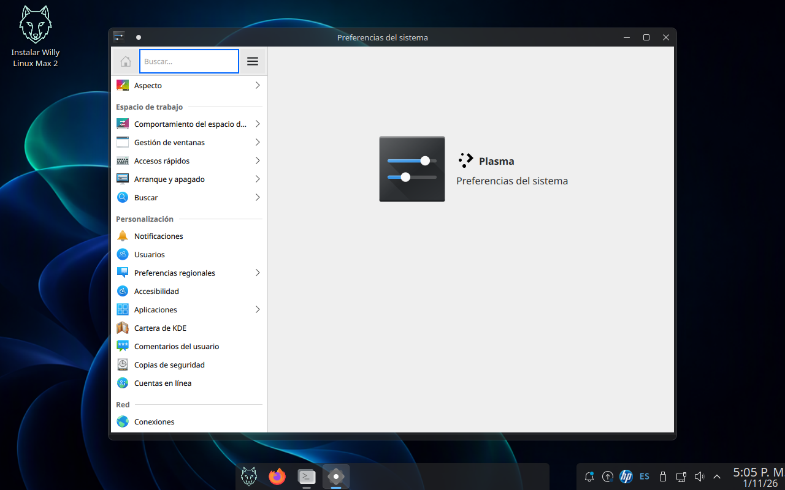

Linux que se parece a Windows 11 y sigue siendo Linux
Willy Linux Max 2 está construida desde cero sobre Ubuntu 24.04 LTS con KDE Plasma:
panel centrado, esquinas redondeadas, iconos y fondos propios, y los programas ya instalados.
Abre un .exe con Wine sin necesitar internet, y trae guía para correr aplicaciones
de Android en el equipo ya instalado.

Qué es
Una distribución propia, no un ISO de otro remasterizado
La primera Willy Linux Max se hizo parcheando la imagen de otra persona. La Max 2 se
hizo de otra manera: un debootstrap de Ubuntu 24.04 en un chroot limpio, la lista de
paquetes decidida una por una, y toda la identidad (iconos, decoraciones, paneles, fondos, arranque,
instalador) construida o licenciada para el proyecto. Cada binario sale del archivo oficial de
Ubuntu o del repositorio oficial de su autor.
Escritorio KDE Plasma con tema propio
Panel en dos tramos (centrado el de las aplicaciones, a la derecha la bandeja con reloj y fecha debajo de la hora), decoraciones de ventana redondeadas al estilo Aurorae, modo claro y oscuro, y el logo del lobo en el botón de inicio y en el arranque.
Aplicaciones de Windows sin configurar nada
Wine 11 del repositorio oficial de WineHQ con wine-mono y wine-gecko
ya dentro de la imagen: un instalador .exe en .NET no se queda pidiendo descargas
si el equipo está desconectado.
Guía real para .apk
El menú trae «Aplicaciones de Android (Waydroid)»: comprueba /dev/kvm, la sesión Wayland y el
módulo binder_linux antes de tocar nada y explica qué instalar. Waydroid necesita
el equipo instalado en disco, y la guía lo dice en vez de dejarlo colgado.
Ofimática con cinta
LibreOffice en español con la interfaz de cinta (notebookbar), diccionarios y sinónimos, integración con Plasma para los diálogos de abrir/guardar, y GIMP, Inkscape, Audacity y Kdenlive con sus filtros y transcodificadores.
Pestaña «Info» en Preferencias del Sistema
Fabricada para el proyecto: marca, modelo de placa y de equipo, CPU, memoria (tamaño, tipo y velocidad), gráficos, discos, red y la versión de Willy con su fecha de compilación.
Pensada para demostración
La sesión live no se auto-bloquea (sin contraseña que pedir en una charla), el instalador exige ocho caracteres al crear el usuario y el sistema arranca ya en español con teclado latinoamericano.
Ficha técnica
Lo que hay dentro
| Base | Ubuntu 24.04 LTS «noble», amd64. Todos los paquetes del archivo oficial
archive.ubuntu.com (main, restricted, universe, multiverse) más los repositorios
oficiales de WineHQ y de Google Chrome. |
|---|---|
| Escritorio | KDE Plasma 5.27 (plasma-desktop) con el tema Fluent y la
capa de marca Willy: iconos, decoraciones Aurorae, Kvantum, SDDM, Plymouth, GRUB y Calamares. |
| Kernel | Serie HWE de Ubuntu (el mismo que trae la base en el momento de la build),
con binder_linux y los módulos KVM disponibles para Waydroid en el equipo instalado. |
| Aplicaciones | Firefox en español (tarball oficial de Mozilla), Google Chrome, LibreOffice en cinta, plasma-systemmonitor, GIMP, Inkscape, Audacity, Kdenlive, Konsola, Dolphin, Wine 11 y los lanzadores de Willy. Ver Aplicaciones. |
| Idioma y región | Español como idioma del escritorio, teclado latinoamericano,
zona horaria America/Bogota y formato de fechas es_CO. |
| Imagen | ISO híbrido (arranca en BIOS con syslinux y en UEFI con GRUB) que sirve como sesión live y como instalador Calamares en la misma pieza. Más de 4,7 GB: USB, no DVD. |
| Requisitos | Equipo x86_64 con 4 GB de RAM para la sesión live (recomendados 8 GB), 20 GB libres para instalar y USB de 8 GB o más para grabar. UEFI o BIOS de los años 2010 en adelante. |
| Licencia | Código de Willy bajo GPL-3.0; arte de los fondos CC-BY-SA-4.0; el resto conserva la licencia de cada autor. Ver Licencias y procedencia. |
Estado del proyecto
Qué está probado y qué está en curso
Willy Linux Max 2 se documenta como se construye: con la evidencia delante. Esta tabla dice, sin adornos, qué se vio en pantalla y qué falta por ver.
| Aspecto | Estado | Cómo se comprobó |
|---|---|---|
| Arranque del live en BIOS y en UEFI | Probado | Capturas sucesivas con hash distinto en VirtualBox; la sesión llega al escritorio por las dos vías. |
| Marca visible (logo, panel, arranque, instalador) | Probado en pantalla y en hardware | Lectura del squashfs del ISO entregado y verificación física en el equipo. |
| Panel en dos tramos y reloj con la fecha debajo | Probado | Captura del escritorio; el layout va en el paquete de aspecto activo, no en el del shell. |
| Aplicaciones de la fase 5 (navegadores, ofimática, creatividad) | Probado en el artefacto | Auditoría de 20 piezas dentro del squashfs del ISO, lanzadores leídos uno a uno. |
.exe con .NET sin red | Probado | Prueba de fuego con el prefijo limpio y la red cortada: Wine instaló el mono local y un ensamblado real respondió. |
| Instalación guiada hasta el final en un disco real | En curso | Falta el ensayo completo en hardware; en máquina virtual se detuvo antes de Particiones. |
| Pestaña «Info» pintada en la sesión live | En curso | Compilada y validada dentro del quemado (plugin con su sección de metadatos); falta la captura en la máquina virtual. |
| Aplicaciones .apk | Guía incluida | Waydroid no cabe en una sesión live; la guía comprueba requisitos en el equipo instalado. |
El proyecto
Trabajo de grado con método, no solo con capturas
Paquetes auditados
Del chroot base
de debootstrap hasta la imagen final, con el inventario de la referencia comparado
paquete por paquete y ruta por ruta.
Defectos cerrados con evidencia
Cada arreglo se escribió en el guion de la fase, se requemó y se volvió a comprobar dentro del ISO, no en el registro de la build.
Fases reproducibles
Chroot, red, idioma, marca, aplicaciones, Wine, capa live, quemado y auditoría: guiones sueltos que se pueden volver a correr, no una memoria de lo que se hizo.
Binarios heredados
Ningún fichero copiado de la imagen que sirvió de referencia. La estética es Fluent (GPLv3) más arte propio; el panel de control de terceros quedó fuera.